They took the girl he raised. Eleven stages through the Naples mafia to bring her home.
They took the girl he raised. Eleven stages through the Naples mafia to bring her home.
Corvo walked away from the Malacarne family to raise Lucia. Tonight they took her back. Fight through rain-soaked alleys, a pizzeria, a night train, the Capuchin catacombs and his father's old house, chase her hearse down the coast road in a 1969 Mustang, and climb the Don's villa to the bell tower. Kung fu, judo and whatever guns the mob drops.
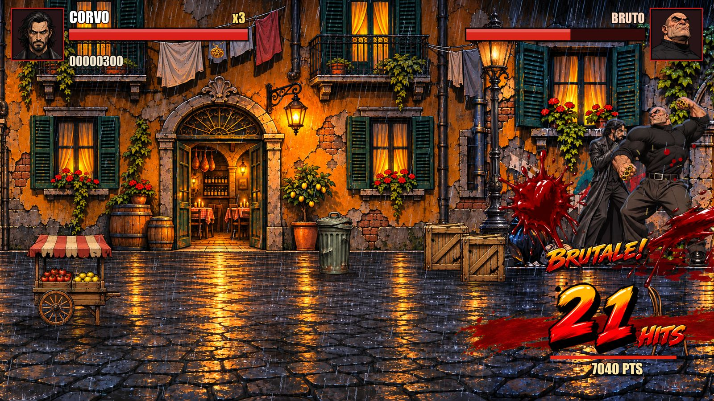
Bistro tables skid across the pizzeria floor, wine casks roll through the osteria, poker tables shower the bisca in cards and chips. Every room has something to throw, topple or send flying.
Secret rooms hide behind gates, shutters, kitchen doors and spiral stairs. In the Don's armoury the crates are full of dynamite, and the fuse doesn't care whose side you're on.
Thugs disguised as mummified monks burst out of the coffins on the floor, climb out of dumpsters, walk out of dark archways and get up off the bandstand mid-song. Nobody appears out of thin air.
Lucia is in the hearse ahead. Sideswipe the mob's sedans into the rail, dodge the carabinieri and the barrels off the back of the truck, and don't you dare shoot the hearse.
Behind the iron gate, a gambling den. Kick a poker table over and the cards fly. Every stage has a hidden room to find, and every one plays differently.
Every character, every stumble, every grab is drawn. The mandolin player stops mid-tarantella, gets up off his chair and walks down off the bandstand into the fight.
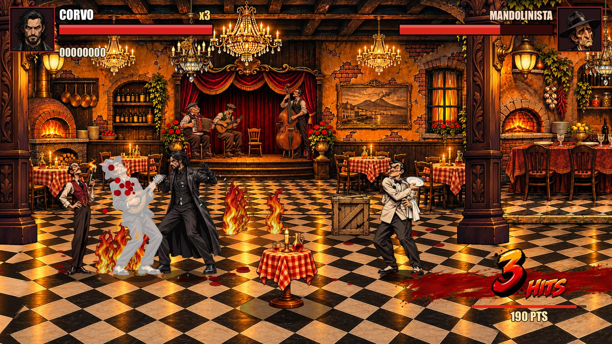
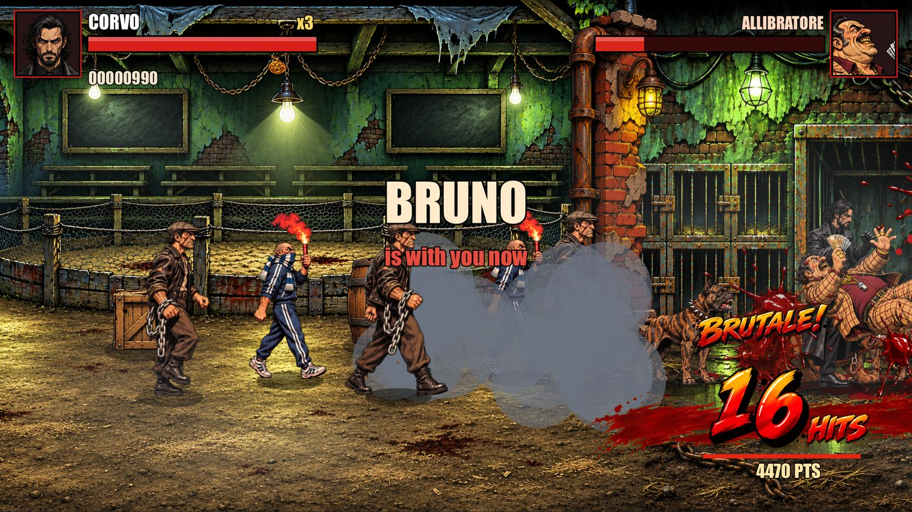
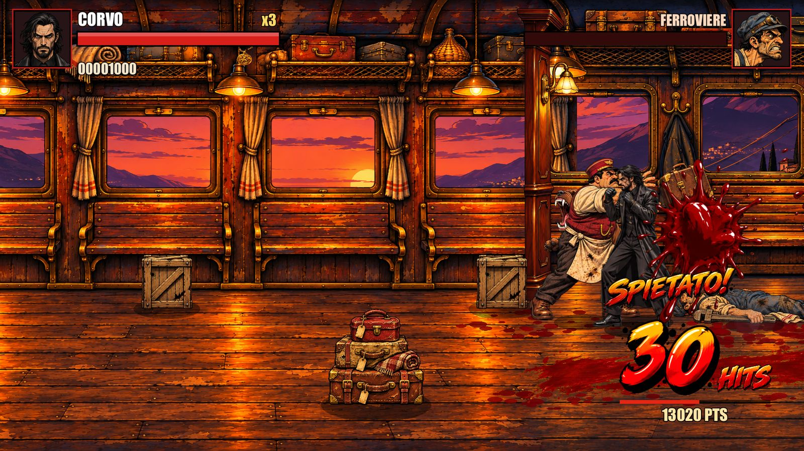
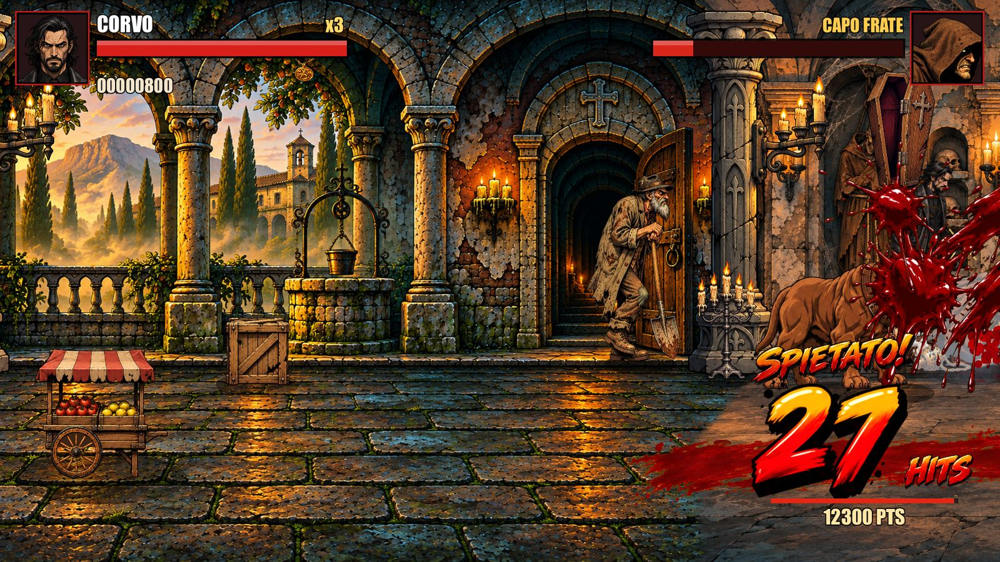
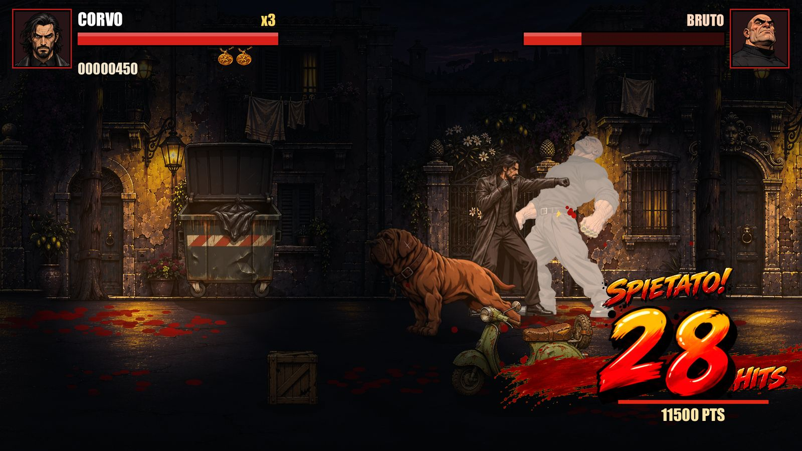
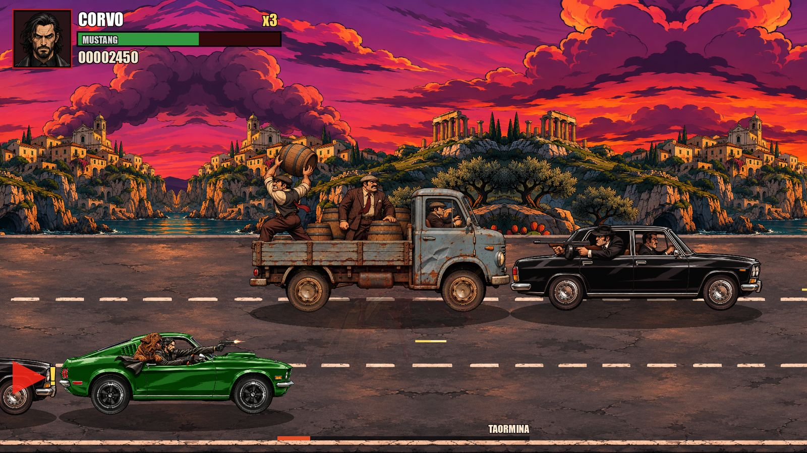
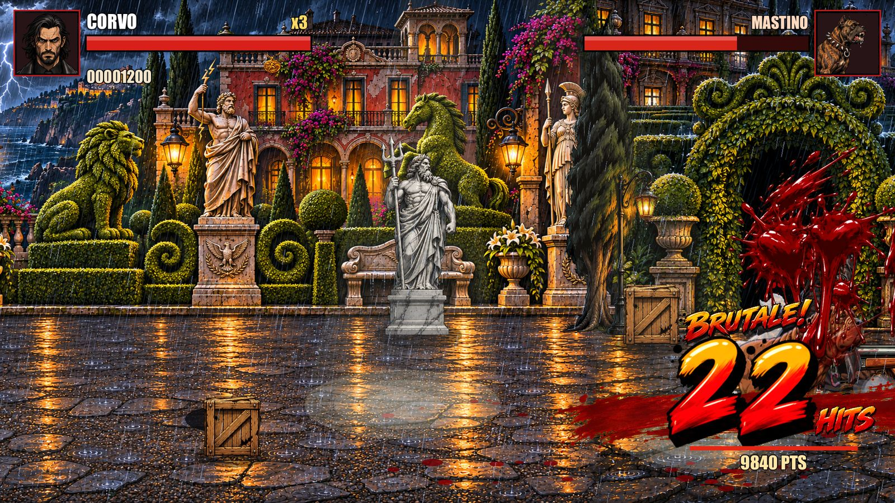
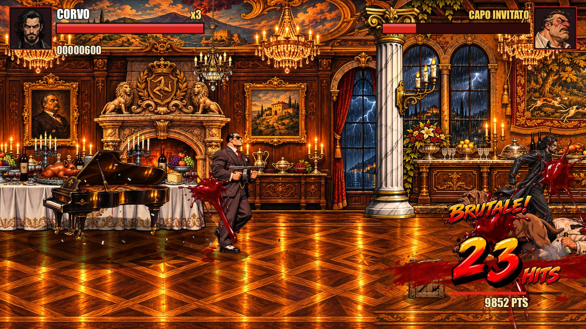
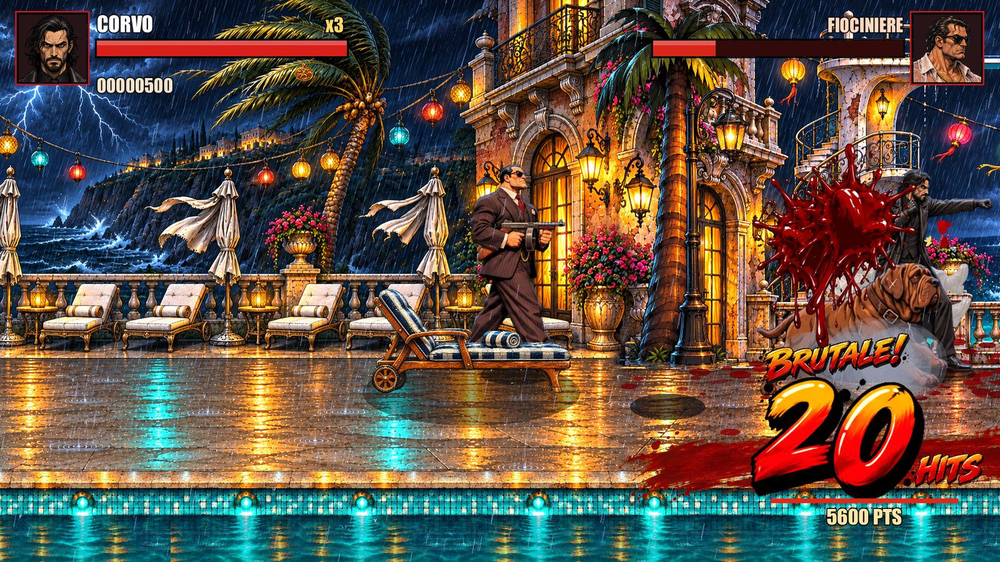
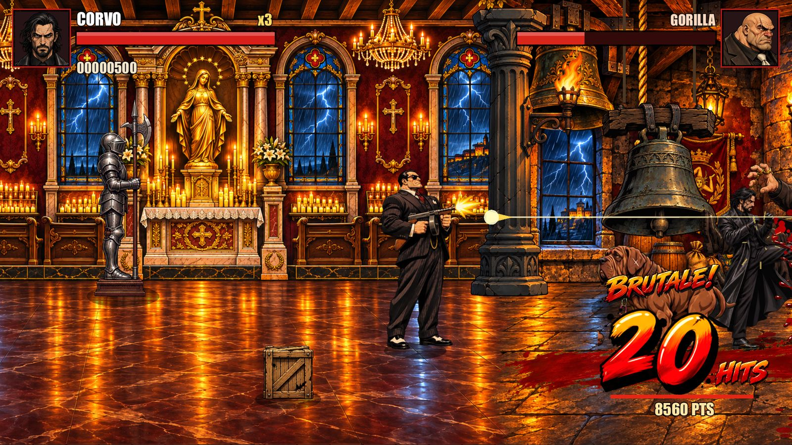
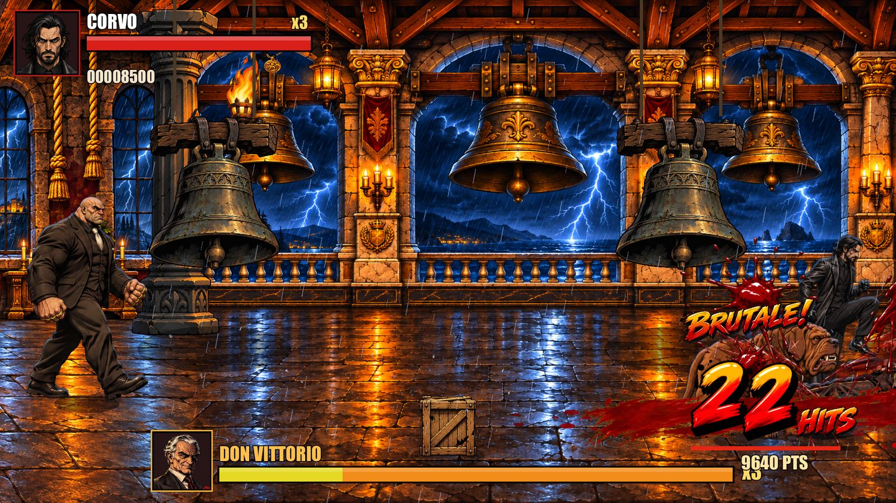
Every boss ends on their knees, Corvo's hand at their collar. Press the .38 to their forehead, or let them walk. The police file keeps count, and Lucia is watching. Spare enough of them and you come home a father. Kill them all and she'll be afraid of you.

A hand-painted beat 'em up about a father, a city and a debt the mob means to collect.
Keyboard or controller · single player · English, with Italian everywhere it matters